Platinenrestposten
Ich biete hier zum Selbstkostenpreis die überzähligen Platinen aus meinen Bestellungen an, einerseits um meine Kosten niedrig zu halten, andererseits um mehr Leuten Zugang zu interessanten Retroprojekten zu erleichtern.
Bei einigen Platinen kann ich auch Bausätze anbieten. Sofern ich nicht alle Teile lagernd habe, kann es länger dauern, bis ich eine neue Teilebestellung aufgebe, um Portokosten niedrig zu halten. Auch Teilbausätze sind möglich.
Falls jemand nicht löten kann, kann ich einfache Platinen auch fertig aufgebaut anbieten. Auch hier kann es länger dauern, bis ich die Zeit dafür finde und ich würde mich über ein Trinkgeld für den Aufwand freuen.
Bis 75g (2-5 Platinen, je nach Größe) gehen sich noch in einem Kouvert aus, Bestellungen mit mehr oder größeren Platinen oder mit Bausätzen benötigen ein Paket. Es gibt jeweils die Möglichkeit, mit oder ohne Sendungsverfolgung zu verschicken.
| Österreich | €1.50 | €4.— | €3.— | €5.50 |
| Deutschland | €1.90 | €5.25 | €6.50 | €11.15 |
Ein paar generelle Punkte:
-
Der Versand erfolgt aus Österreich, bezahlung per PayPal für Freunde oder Banküberweisung. Bitte vor der Zahlung meine Rückmeldung über Verfügbarkeit und endgültigen Preis abwarten. (Ich bin 4. - 7. 9. auf der DoReCo und kann's gerne dort übergeben.)
-
Dies ist kein Shop sondern mein Hobby, ich mache dabei auch keinen Gewinn. Dementsprechend bitte ich um Rücksicht und Geduld.
-
Die Komponentenpreise sind die Einkaufspreise meiner letzten Bestellung. Wenn ich Teile nachbestellen muß, kann es sein, dass sich die Preise seither geändert haben.
-
Ich verwende Präzesionssockel (die mit den runden Löchern). Ich habe auch ein paar Federsockel, falls jemand die lieber hat.
-
Ich bin flexibel, auf Sonderwünsche gehe ich, soweit möglich, gerne ein. Ernst gemeinte Fragen sind immer gerne willkommen.
Bei Interesse oder Fragen einfach eine PM an dillof auf Forum64 oder per email an pcbs@tpau.group.
Commodore
Commodore 64
Userport DS-3231 RTC Modul
Echtzeituhr am Userport, kompatibel mit GEOS und C64OS.
16k Modul
Atari 2600 Keyboard Controller
Ziffernblock für Atari-kompatiblen Joystickport.
Cardko Cardkey 1 Keypad
Ziffernblock für Atari-kompatiblen Joystickport.
Coplin Keypad
Ziffernblock für Atari-kompatiblen Joystickport.
Coplin Keypad mit MX Tasten
Ziffernblock für Atari-kompatiblen Joystickport.
Ausverkauft
DD-001 Floppy Controller Modul
Easyflash 3 Modul
Magic Desk Modul
EPROM per Jumper konfigurierbar.
Modulport Winkeladapter
SuperClone 5.0 Modul
Nachbau des SuperSnapshot 5.
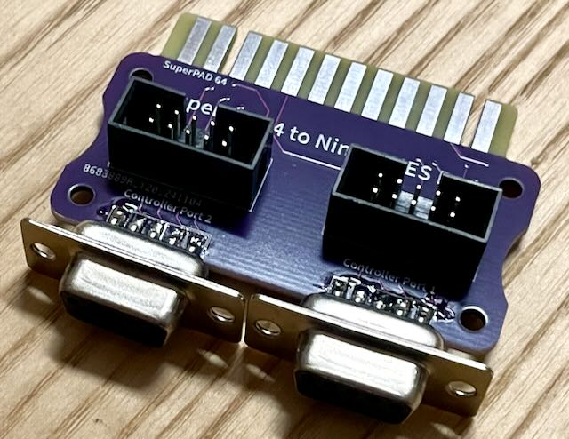
SuperPad64 auf Ninja SNES Pad Adapter
Verwende den 8xSNES Controller Adapter an den Joystickports.
Trap Them Adapter
Verwende SNES Controller mit allen Tasten am Joystickport.
Wheel of Joy Midi Multiplayer Adapter
Schließe 4 C64 oder Amiga kompatible Joysticks mit 2 Feuertasten am Userport an.
Wheel of Joy Mini Multiplayer Adapter
Schließe 4 Amiga kompatible Joysticks mit 2 Feuertasten am Userport an.
Wheel of Joy Multiplayer Adapter
Schließe 8 Joysticks mit 1 Feuertaste am Userport an.
Open Source Cart Reader Commodore 64 Adapter
Lese Commodore 64 Module mit dem OSCR aus.
Commodore 128
Commodore 16, Plus/4
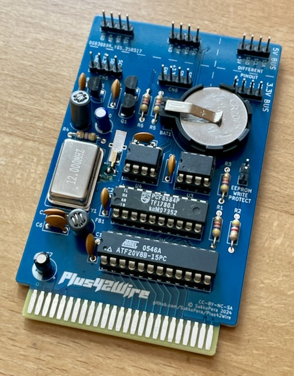
2Wire Modul
Joystick Adapter
Magic Desk Modul
ReVox Digital-Sound Modul
Reseed SID Modul
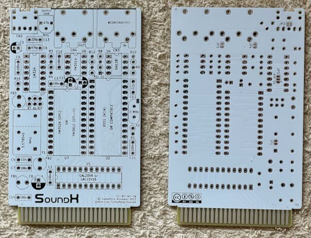
SoundX Modul
Userport Modul V3
Wheel of Joy Midi Multiplayer Adapter
Schließe 4 C64 oder Amiga kompatible Joysticks mit 2 Feuertasten am Userport an.
Wheel of Joy Mini Multiplayer Adapter
Schließe 4 Amiga kompatible Joysticks mit 2 Feuertasten am Userport an.
Wheel of Joy Multiplayer Adapter
Schließe 8 Joysticks mit 1 Feuertaste am Userport an.
Commodore VC-20
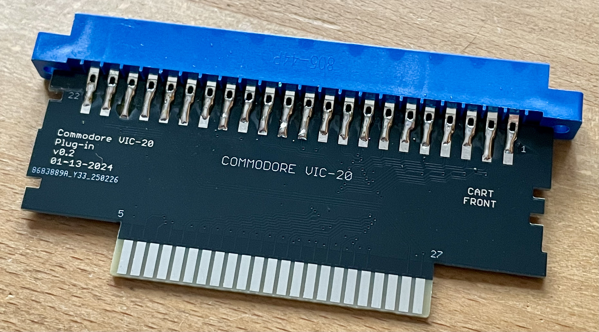
Open Source Cart Reader VC-20 Adapter
Lese Commodore VC-20 Module mit dem OSCR aus.
Commodore Amiga
Lazarustorm
Playstation Controller Adapter
MOS KIM-1
Replica
Nachbau im original Layout.
RIOT Adapter
6501 Adapter
Verwende 62256 RAM im KIM-1.
Keypad
Ziffernblock mit 6x6mm Tastern.
MTU Motherboard
MTU AUX Karte
MTU Programmable Memory Card
MTU RAM/ROM Card
MTU Stromversorgung
PAL-2 Stromversorgung
Stromversorgung, serielle Schnittstelle und I/O Pins für den PAL-2.
PAL-2 to KIM-1 Adapter
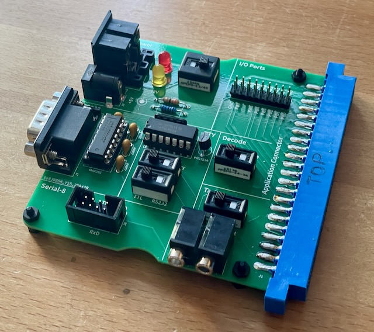
PSU
Andere Heimcomputer
Atari 8-Bit
Open Source Cart Reader Atari 8-Bit Adapter
Lese Atari XL/XE Module mit dem OSCR aus.
Amstrad CPC
Joystick Adapter
Verwende 2 Atari-kompatible Joysticks am CPC.
BBC Micro
Commander X16
Microsoft MSX
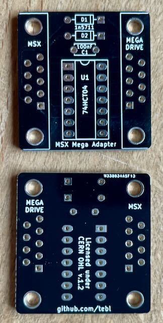
Megadrive Adapter
Open Source Cart Reader Microsoft MSX Adapter
Lese MSX Module mit dem OSCR aus.
Sinclair ZX Spectrum
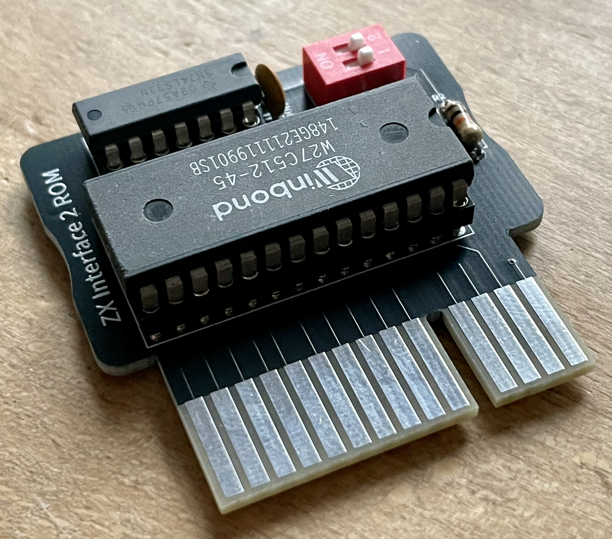
Interface 2 ROM Modul
Interface 2.021
Interface 2.021 Diagnostics Modul
Interface 2.021 ROM Modul
Altair 8800
Bus Monitor Karte
Zeigt Buszugriffe auf Display oder über serielle Schnittstelle.
Echtzeituhr Karte
LED Ausgabe
Raiser
SPI und I2C Karte
Tandy Color Computer, Dragon 32
Joystick Adapter
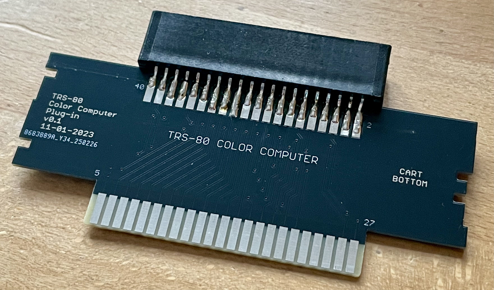
Open Source Cart Reader TRS-80 Adapter
Lese TRS-80 Module mit dem OSCR aus.
Texas Instruments TI-99/4A
Open Source Cart Reader TI-99/4A Adapter
Lese TI-99/4A Module mit dem OSCR aus.
Triumph-Adler Alphatronics PC
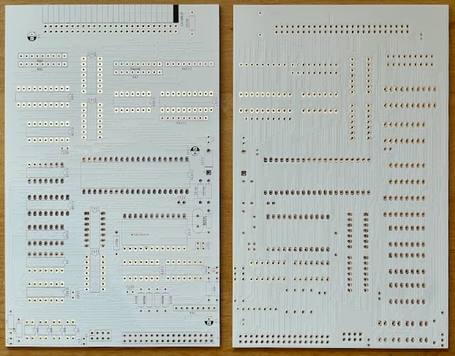
Floppy Controller
ROM Modul
Cody
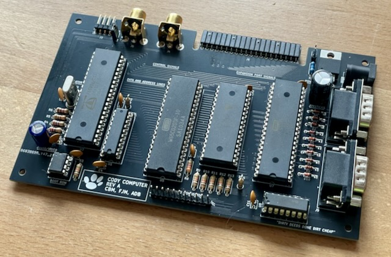
Computer
Keyboard XL
Cartridge
Spielekonsolen
Atari 2600
Keyboard Controller
Ziffernblock für Atari-kompatiblen Joystickport.
Open Source Cart Reader Atari 2600 Adapter
Lese Atari 2600 Module mit dem OSCR aus.
Atari 5200
Joystick Adapter
Verwende einen Atari, Megadrive oder PC Joystick am Atari 5200.
Open Source Cart Reader Atari 5200 Adapter
Lese Atari 5200 Module mit dem OSCR aus.
Atari 7800
Megadrive Controller Adapter
Verwende einen Megadrive Controller am Atari 7800.
Open Source Cart Reader Atari 7800 Adapter
Lese Atari 2600/7800 Module mit dem OSCR aus.
Atari Lynx
Open Source Cart Reader Atari Lynx Adapter
Lese Atari Lynx Module mit dem OSCR aus.
Moderne Geräte
Development
ATF15xx Breakout Platine
ATF15xx Programmer
D-Sub-15 Breakout Platine
Greife auf die Pins von Stecker oder Buchse via Stiftleiste zu.
D-Sub-25 Breakout Platine
Greife auf die Pins von Stecker oder Buchse via Stiftleiste zu.
D-Sub-9 Breakout Platine
Greife auf die Pins von Stecker oder Buchse via Stiftleiste zu.
DIN-6 Breakout Platine
Greife auf die Pins von Stecker oder Buchse via Stiftleiste zu.
DIN-8 270° Breakout Platine
Greife auf die Pins von Stecker oder Buchse via Stiftleiste zu.
S-Video Breakout Platine
SCART Breakout Platine
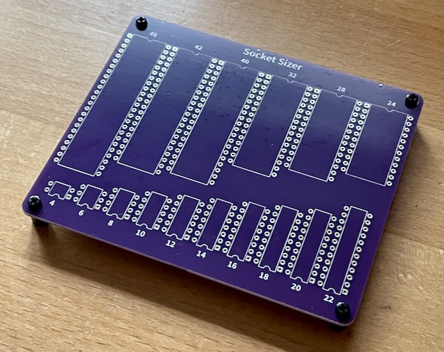
Socket Sizer
VGA Breakout Platine
Computer
Gotek Schalter
Kaleidoscopico
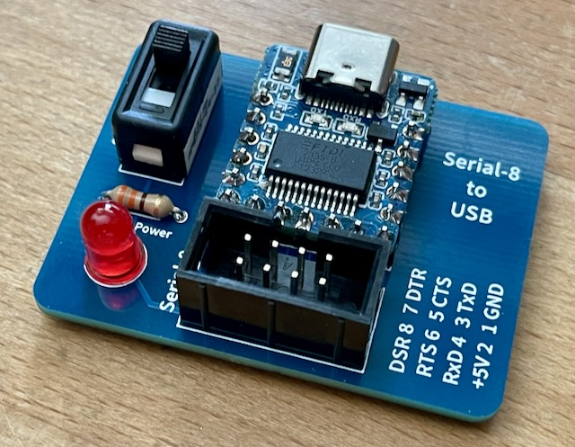
Serial-8 auf USB Adapter
USB Joystick Adapter
Open Source Cart Reader
Atari 2600 Adapter
Lese Atari 2600 Module mit dem OSCR aus.
Atari 5200 Adapter
Lese Atari 5200 Module mit dem OSCR aus.
Atari 7800 Adapter
Lese Atari 2600/7800 Module mit dem OSCR aus.
Atari 8-Bit Adapter
Lese Atari XL/XE Module mit dem OSCR aus.
Atari Lynx Adapter
Lese Atari Lynx Module mit dem OSCR aus.
Commodore 64 Adapter
Lese Commodore 64 Module mit dem OSCR aus.
Microsoft MSX Adapter
Lese MSX Module mit dem OSCR aus.
TI-99/4A Adapter
Lese TI-99/4A Module mit dem OSCR aus.
TRS-80 Adapter
Lese TRS-80 Module mit dem OSCR aus.
VC-20 Adapter
Lese Commodore VC-20 Module mit dem OSCR aus.